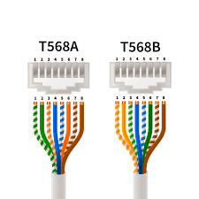

Elementos de Rede e Servidores
Configuração de Rede Interna
A configuração de rede interna da ByteCafe é projetada para garantir alta eficiência e segurança nas operações. Utilizando o Cisco Packet Tracer, nossa estrutura inclui dispositivos como switches, roteadores e cabos de alta qualidade, configurados para otimizar a comunicação entre todos os dispositivos conectados. Esse planejamento detalhado permite um fluxo de dados confiável, essencial para o funcionamento do servidor web e para o desempenho da rede como um todo.
Configuração de Servidores
Na ByteCafe, os servidores desempenham um papel crucial para manter os serviços operacionais. Nosso Servidor de Domínio (DNS) traduz nomes de domínio em endereços IP, tornando a navegação mais amigável para os usuários. O Servidor de Comunicação Web (HTTP) gerencia as solicitações de acesso a páginas web, entregando o conteúdo de forma segura e rápida aos navegadores. Já o Servidor DHCP automatiza a distribuição de endereços IP, eliminando a necessidade de configuração manual e evitando conflitos de IP, o que é fundamental para o gerenciamento de uma rede complexa.
Equipamentos de Rede e Suas Funções
A infraestrutura de rede da ByteCafe é composta por dispositivos essenciais. Os switches conectam diferentes dispositivos na rede, possibilitando uma comunicação eficiente entre eles. Os roteadores permitem a interligação de redes distintas e garantem o tráfego de dados entre elas. Além disso, os Access Points oferecem conexão de dispositivos sem fio à nossa rede cabeada, promovendo flexibilidade e mobilidade para os usuários.
Conceito de Servidor
Em termos gerais, um servidor é um dispositivo ou programa que oferece serviços para outros dispositivos (clientes) em uma rede. Esses servidores são fundamentais para hospedar sites, armazenar dados, processar transações, entre outras funções essenciais que suportam o ambiente de rede. Na ByteCafe, nossos servidores são configurados para alta disponibilidade e segurança, com foco em desempenho contínuo.
Principais Protocolos de Rede
A comunicação na nossa rede é baseada em protocolos essenciais para o funcionamento eficiente dos serviços. O DNS (Domain Name System) é o sistema de nomes que traduz domínios para IPs, facilitando o acesso a sites e serviços. O HTTP (Hypertext Transfer Protocol) é utilizado para transferir páginas web para os navegadores. Já o DHCP (Dynamic Host Configuration Protocol) atribui endereços IP automaticamente, simplificando o processo de conexão dos dispositivos à rede e prevenindo conflitos de IP.
Cabo de Rede e Crimpagem
A crimpagem de cabos de rede é um processo crucial para garantir uma conexão estável e confiável. Cada cabo segue um padrão de pinagem, permitindo que a transferência de dados ocorra de forma eficiente. Abaixo, há uma imagem ilustrativa do processo de crimpagem que utilizamos em nossos cabos de rede para garantir sua qualidade e durabilidade.
Modelo OSI
O Modelo OSI é uma estrutura em sete camadas que descreve como os dados são transferidos através de uma rede, desde a camada física até a camada de aplicação. Esse modelo é utilizado como uma referência teórica para entender e projetar redes, sendo essencial para manter a organização e a funcionalidade dos processos de comunicação.
Modelo TCP/IP
O modelo TCP/IP, base da comunicação na internet, organiza a transmissão de dados em camadas que garantem a eficiência e a precisão das conexões. Ele define como os dados são embalados, transmitidos e recebidos, assegurando uma comunicação estável entre dispositivos. A arquitetura do TCP/IP é fundamental para o funcionamento das redes modernas, sendo amplamente adotado em sistemas de grande escala como o da ByteCafe.